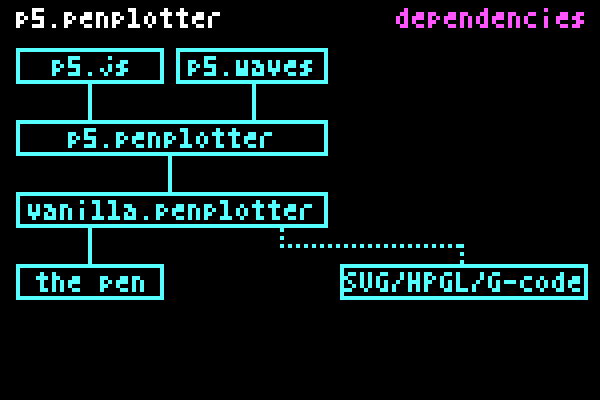
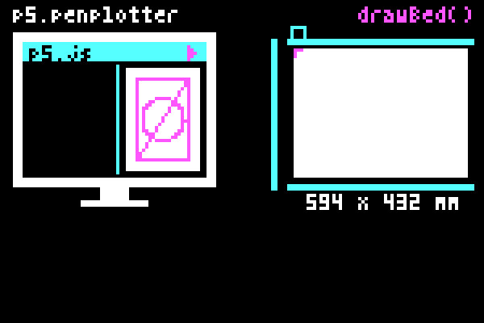
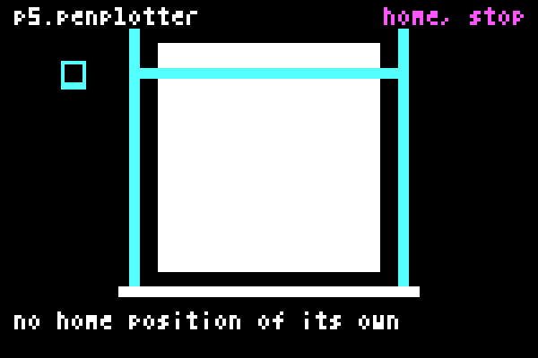

Setup
Four ways to wire the same adapter and the same engine into a sketch: a plain p5 sketch with function setup(), a sketch as a module, a module that publishes its globals, and import maps. Only the wiring changes. Start at 1 and stop where you are comfortable.

The one fact everything hinges on
p5.penplotter and vanilla.penplotter are ES modules: files that use import and export. A module has two properties that decide every setup below.
- A module creates no globals. A
function setup()written inside a module is invisible to p5, because p5's global mode looks forwindow.setup. - A module script is deferred. The browser runs it after the whole page has been read, but before the
loadevent fires.
p5 starts a global-mode sketch on load. So the timeline of a page is always:
1. p5.js loads (classic script, runs at once)
2. classic scripts run in order (your sketch.js defines setup/draw)
3. page fully read
4. module scripts run (the adapter is installed here)
5. DOMContentLoaded
6. load → p5 calls window.setup() (createPlot already exists)Everything that follows is a way of placing the three import lines somewhere on that timeline.
1. Global mode, wiring in index.html
Start here. This is the setup for a classroom, for the p5.js Web Editor, and for anyone who wants sketch.js to look like every other p5 sketch.
The imports live in index.html, inside one inline module. sketch.js is a plain script with no imports at all.
index.html
<!DOCTYPE html>
<html lang="en">
<head>
<meta charset="utf-8">
<title>penplotter start</title>
<script src="https://cdn.jsdelivr.net/npm/p5@2.2.2/lib/p5.js"></script>
<script type="module">
import { PlotterEngine } from "https://seb-prjcts-be.github.io/vanilla.penplotter/vanilla.penplotter.js";
import * as Ebb from "https://seb-prjcts-be.github.io/vanilla.penplotter/src/driver/ebb.js";
import { installP5Penplotter } from "https://seb-prjcts-be.github.io/p5.penplotter/p5.penplotter.js";
installP5Penplotter(p5, PlotterEngine, { driver: Ebb });
</script>
<script src="sketch.js"></script>
</head>
<body>
</body>
</html>sketch.js
let plot;
function setup() {
createCanvas(400, 250);
plot = createPlot({ x: 80, y: 150, width: 120 });
noLoop();
}
function draw() {
background("#ffffff");
stroke("#111111");
noFill();
let points = [];
points.push([60, 200]);
points.push([200, 40]);
points.push([340, 200]);
plot.clear();
plot.polygon(points);
plot.circle(200, 150, 80);
plot.go(); // ready: click the drawing to plot, click again to stop
}Why it works
sketch.js runs as a classic script at step 2 of the timeline. It only defines setup and draw; nothing is called yet. The inline module runs at step 4 and installs createPlot on p5.prototype. At step 6 p5 calls setup(), and by then the adapter has been there for two steps.
Rules
- Load p5.js before the module. The module reads the global
p5the moment it runs. sketch.jsmust not havetype="module". Add it andsetupstops being global.- Call
createPlot()insidesetup(), never at the top of the file. At the top ofsketch.jsthe adapter is not installed yet. - The position of the module in the document does not matter. Deferred is deferred.
In the p5.js Web Editor
Replace the editor's index.html with the one above and keep sketch.js as a normal file. Drawing, the preview and plot.go() all work there; the port list opens on your click like anywhere else. Plotted from the editor on 2026-10-01, in Chrome, with the eight-line sketch from the start page.
If it breaks
createPlot is not defined:sketch.jshastype="module", orcreatePlot()is called outsidesetup().p5 is not definedin the module: the p5 script tag comes after the module, or failed to load.- An older version keeps showing up after an update: reload with Ctrl+F5 to drop the browser's cached module.
2. Instance mode, sketch as a module
The README's default. The three imports move into sketch.js, which becomes a module. Because a module creates no globals, the sketch hands itself to p5 explicitly with new p5(…), and every p5 call gets a p. in front.
index.html
<script src="https://cdn.jsdelivr.net/npm/p5@2.2.2/lib/p5.js"></script>
<script type="module" src="sketch.js"></script>sketch.js
import { PlotterEngine } from "https://seb-prjcts-be.github.io/vanilla.penplotter/vanilla.penplotter.js";
import * as Ebb from "https://seb-prjcts-be.github.io/vanilla.penplotter/src/driver/ebb.js";
import { installP5Penplotter } from "https://seb-prjcts-be.github.io/p5.penplotter/p5.penplotter.js";
installP5Penplotter(p5, PlotterEngine, { driver: Ebb });
new p5(function sketch(p) {
let plot;
p.setup = function () {
p.createCanvas(400, 250);
plot = p.createPlot({ x: 80, y: 150, width: 120 });
p.noLoop();
};
p.draw = function () {
p.background("#ffffff");
p.stroke("#111111");
p.noFill();
plot.clear();
plot.rect(10, 10, 380, 230);
plot.circle(200, 125, 120);
plot.go(); // ready: click the drawing to plot, click again to stop
};
});Why choose it
- One file holds everything: what is imported, which version, and the sketch. No hidden wiring in
index.html. - No dependence on load order. The install and the sketch are the same script.
- Several sketches on one page, each with its own
plot. - The same file runs under a bundler or in a test without changes.
What it costs
The p. prefix on every p5 call, and p.key instead of key. For beginners that is a real cost; for a library author it is the honest form.
3. Global mode from a module
A middle road, and the clearest demonstration of what global mode actually is. The sketch stays a module with its own imports, but it publishes its functions on window itself.
index.html
<script src="https://cdn.jsdelivr.net/npm/p5@2.2.2/lib/p5.js"></script>
<script type="module" src="sketch.js"></script>sketch.js
import { PlotterEngine } from "https://seb-prjcts-be.github.io/vanilla.penplotter/vanilla.penplotter.js";
import * as Ebb from "https://seb-prjcts-be.github.io/vanilla.penplotter/src/driver/ebb.js";
import { installP5Penplotter } from "https://seb-prjcts-be.github.io/p5.penplotter/p5.penplotter.js";
installP5Penplotter(p5, PlotterEngine, { driver: Ebb });
let plot;
function setup() {
createCanvas(400, 250);
plot = createPlot({ x: 80, y: 150, width: 120 });
noLoop();
}
function draw() {
background("#ffffff");
stroke("#111111");
noFill();
plot.clear();
plot.rect(10, 10, 380, 230);
plot.circle(200, 125, 120);
plot.go(); // ready: click the drawing to plot, click again to stop
}
window.setup = setup;
window.draw = draw;Why it works
The module runs at step 4, connects the adapter, and puts setup and draw on window. At step 6 p5 finds them there, exactly as it would find a classic script's functions. Inside the functions, createCanvas and key resolve because p5 in global mode copies its API onto window before calling setup().
When to use it
When you want one file and no p. prefix, and you are fine with the window. lines at the bottom. Every p5 callback you use (mousePressed, windowResized) needs its own line. Forget one and p5 silently never calls it.
4. Import maps and local neighbours
Two refinements for development. Both change only where the modules come from, not how the sketch is written; they combine with setup 1, 2 or 3.
Local neighbours
While working on the libraries themselves, load them from sibling folders instead of GitHub Pages. This is how the repository's own examples are wired, on localhost and on the published site alike:
import { PlotterEngine } from "../vanilla.penplotter/vanilla.penplotter.js";
import * as Ebb from "../vanilla.penplotter/src/driver/ebb.js";
import { installP5Penplotter } from "../p5.penplotter/p5.penplotter.js";Relative imports resolve against the importing file. vanilla.penplotter.js re-exports from its own src/ folder, so the whole repository has to be present, not the single file.
Import maps
An import map lets the sketch import by name, and keeps every URL in one place in index.html. Switching from GitHub Pages to a local copy, or pinning a version, then touches a single block and no sketch.
<script src="https://cdn.jsdelivr.net/npm/p5@2.2.2/lib/p5.js"></script>
<script type="importmap">
{
"imports": {
"vanilla.penplotter": "https://seb-prjcts-be.github.io/vanilla.penplotter/vanilla.penplotter.js",
"vanilla.penplotter/driver/ebb": "https://seb-prjcts-be.github.io/vanilla.penplotter/src/driver/ebb.js",
"p5.penplotter": "https://seb-prjcts-be.github.io/p5.penplotter/p5.penplotter.js"
}
}
</script>
<script type="module" src="sketch.js"></script>import { PlotterEngine } from "vanilla.penplotter";
import * as Ebb from "vanilla.penplotter/driver/ebb";
import { installP5Penplotter } from "p5.penplotter";
installP5Penplotter(p5, PlotterEngine, { driver: Ebb });The import map must appear before the first module script. Bare names like "p5.penplotter" are what a package manager would resolve; the import map does the same job in the browser, without one.
The GitHub Pages URLs serve current main. The adapter refuses a core below its required minimum; it does not verify every change between versions. For a project you want to keep, pin both versions or keep tested local copies of both repositories.
Your canvas on the paper
For the sketches above, createPlot({ x: 80, y: 150, width: 120 }) places the canvas 80 mm right and 150 mm down from the machine's home corner, where you park the carriage by hand. A 400 × 250 canvas becomes a 120 × 75 mm drawing area. width sets the drawing width in millimetres; the height follows the canvas proportions.
Without paper, omitted x and y default to zero. Without width or mmPerPixel, one pixel is one millimetre. With createPlot({ paper: "A2", margin: 12 }), the canvas instead fits proportionally inside the paper margins and is centred by default. See the guide for paper sizes and placement.

plot.drawBed(bedCanvas) previews the planned strokes and selected paper; without a paper selection, it uses the mapped canvas area. Pass a separate HTML canvas for the preview. This animation is schematic, not to scale, and shows no automatic homing.5. Plotting for real, in every setup
Whichever wiring you pick, direct plotting needs the same three things:
- The driver handed in at install:
installP5Penplotter(p5, PlotterEngine, { driver: Ebb }). Without it,plot.go()throws and everything else still works. - Chrome or Edge, on
localhostorhttps. Web Serial exists nowhere else. A folder under XAMPP'shtdocsopened ashttp://localhost/…qualifies; a file opened asfile://does not. The p5.js Web Editor does; plotted from it on 2026-10-01. - A click on the drawing.
plot.go()is written at the end of the drawing; the browser shows its port list only after a click, so the status line asks you to check the machine and click. That click is the confirmation. A second click stops.
Park the carriage in the home corner by hand before the first plot; the machine has no homing. The driver refuses any point outside the profile's travel with an explicit error instead of moving.

Choosing
- Teaching, Web Editor, "just draw": setup 1. The sketch is indistinguishable from any other p5 sketch.
- Library work, examples, tests: setup 2. Explicit, self-contained, no load-order assumptions.
- One file, no prefix: setup 3, and remember the
window.lines. - Working on the libraries: setup 4 on top of any of the above.
None of these is a compromise. The connection is explicit in all four (a design decision, see Architecture) and the adapter has no idea which one you picked.